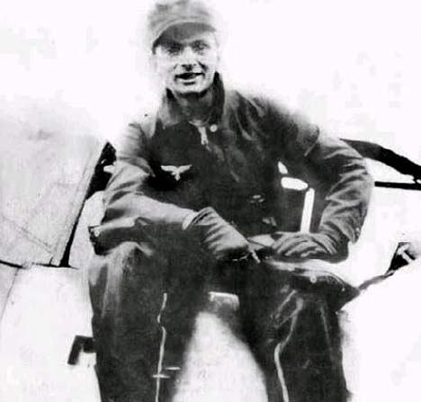

It all started during the Second World War. “I didn’t target a man who I knew. I shot at an enemy plane that went down. That’s all,” said Horst Rippert, a fighter pilot in the Luftwafe, Germany’s air force. At the time, Rippert was out on a routine mission in southern France. He spotted a plane below him. Rippert was flying a Messerschmitt Me-109 over the Mediterranean near Toulon. “The pilot’s plane was beneath me. I saw his markings. I tricked him by putting myself behind him and shot him down,” says Rippert.
Rippert later heard some devastating news on American radio traffic. The Americans reported that the French writer Antoine de Saint-Exupéry had been flying in southern France that day and that he was missing. Rippert was sure that he had shot down the writer. However, he never reported the shooting to the German authorities, so there was no record of it. However, years later, Rippert told his fascinating story to the press, which has since been verified by historians.
At the time, Antoine de Saint-Exupéry was a famous author, but he was also a pilot. In 1921, he started his pilot training in Strasbourg in the northeastern region of France. He had the opportunity to enter the air force, but wanted to spend time with his fiancée. In 1926, they broke up and he went back to flying. He became one of the first pilots to do international postal flying. Antoine de Saint-Exupéry wrote thirteen books, some of which were published posthumously. The list includes The Little Prince, which has been translated into 180 languages and dialects.
“If I had known it was Saint-Exupéry, I would never have shot him down,” said Rippert. “I loved his books. I knew he was a French pilot, but he was most likely my favourite author at the time. In our youth, at school, we all read him and adored his books. He knew admirably how to describe the sky, the thoughts and feelings of pilots. His work drew many of us to the profession. ‘What have you done?’ I said to myself.” Of course, Rippert had no way of knowing that the pilot he shot down was in fact the famed author Saint-Exupéry. “I am shocked and sorry,” Rippert added. “Who knows what other great books he would have gone on to write?” ✪
Saint-Exupéry was born on 29th June 1900. He published his most famous book, The Little Prince, in 1943. The story is set in a desert. It was taken from Saint-Exupéry's own experience of being trapped in a desert after a plane crash. The story is a commentary on the different thought processes that exist between children and adults. One of the most famous quotes from the book is, “One sees clearly with the heart. Anything essential is invisible to the eyes.” It is one of several books inspired by his wartime experiences. Both children and adults enjoy the book. In between his years as an international pilot and his service in the war, Saint-Exupéry spent nearly 25 months in North America, more specifically in New York City and also Quebec, in Canada. Saint-Exupéry, a hero to many, had his last book Manon, danseuse published posthumously in 2007.
